Acknowledging Prof. Dr. Sudarshan Tiwari
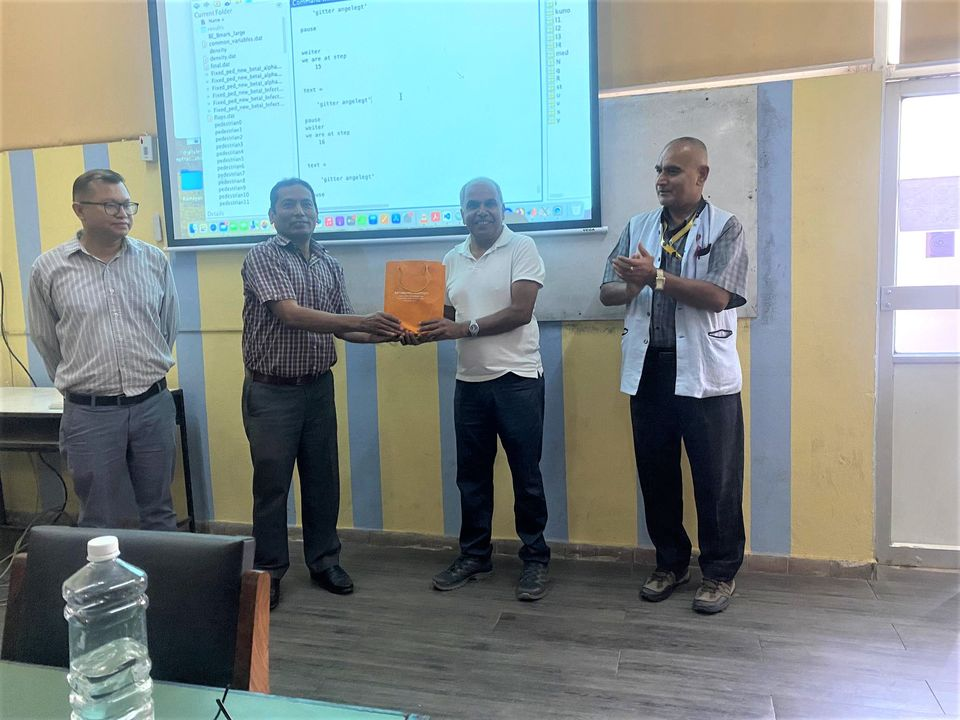
Acknowledging Prof. Dr. Sudarshan Tiwari from the Department of Mathematics at RPTU Kaiserslautern-Landau, Germany who delivered a talk titled "Disease Contagion Models Coupled to Crowd Motion and Mesh-Free Simulations." Read More...
May 23, 2023Table Tennis Champions!
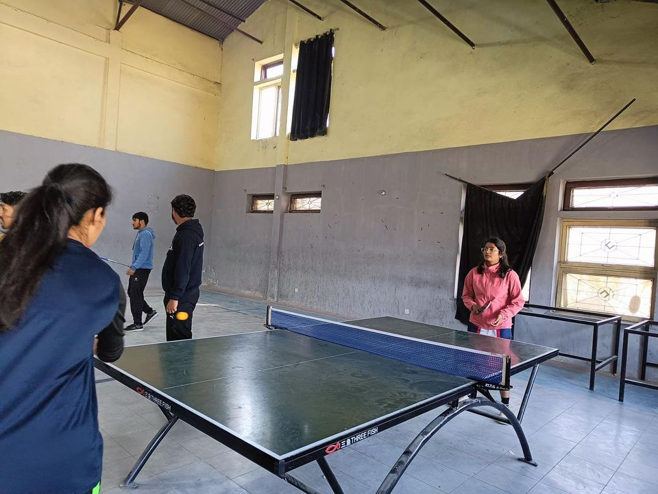
Table Tennis Champions! Aakriti K.C. and Prajanya Parakram Shrestha conquer the competition at the Table Tennis Tournament of CM Sports 2023. Congratulations to Supriya Baniya and Hritik Chaudhary for securing runner up positions. Congratulations on your well-deserved victory! Read More...
March 11, 2023Smashing performance by Supriya Baniya and Prashish Dahal and also congratulations to Anisha Lamsal and Sulav Tiwari for securing runner up positions at the Badminton Tournament Girls and Boys category of CM Sports 2023.
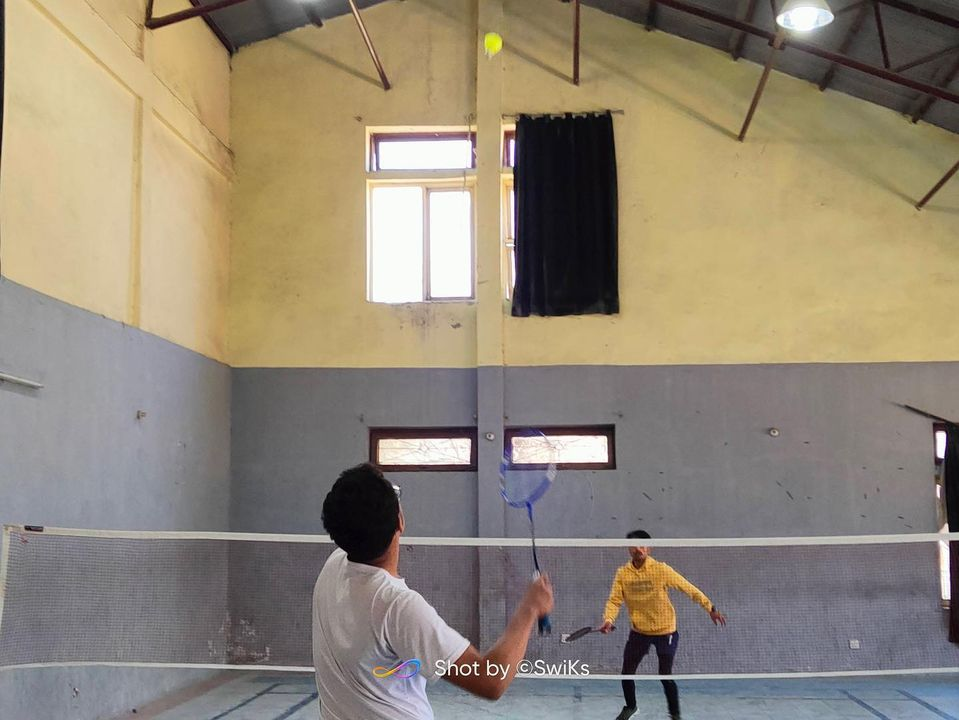
Smashing performance by Supriya Baniya and Prashish Dahal and also congratulations to Anisha Lamsal and Sulav Tiwari for securing runner up positions at the Badminton Tournament Girls and Boys category of CM Sports 2023. Much thanks to the organizers, volunteers and all the participants for their dedicated efforts. Read More...
March 11, 2023As the match progressed, the Faculty team took the lead, with the Club Members fighting back with all their might.
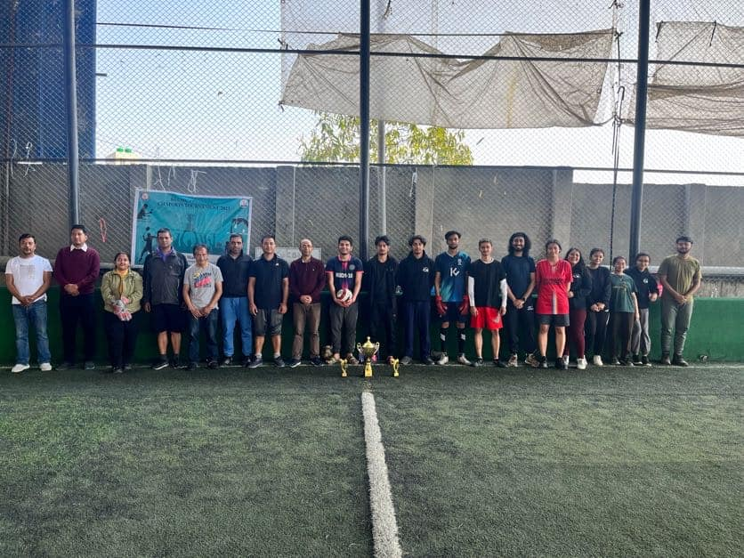
Gathered on the court, the Faculty and Club Members put aside their differences for a fun-filled game of Futsal, with the players showing off their skills and teamwork. As the match progressed, the Faculty team took the lead, with the Club Members fighting back with all their might. Despite the close call, the Faculty team emerged victorious, with both teams displaying great sportsmanship and camaraderie throughout the game. The cheers and applause echoed throughout the court. Read More...
March 11, 2023Congratulations to the CM Sports Cup 2023 champions!
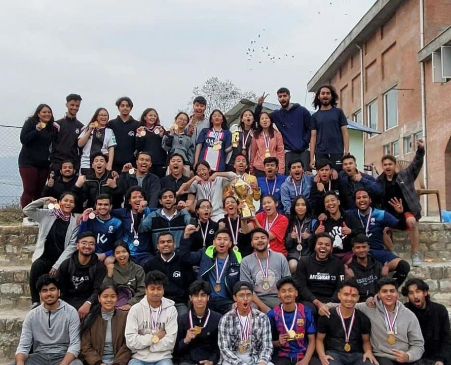
Congratulations to the CM Sports Cup 2023 champions! Your dedication has earned you recognition you deserve. Keep inspiring others to achieve greatness. Read More...
March 11, 2023Checkmate!
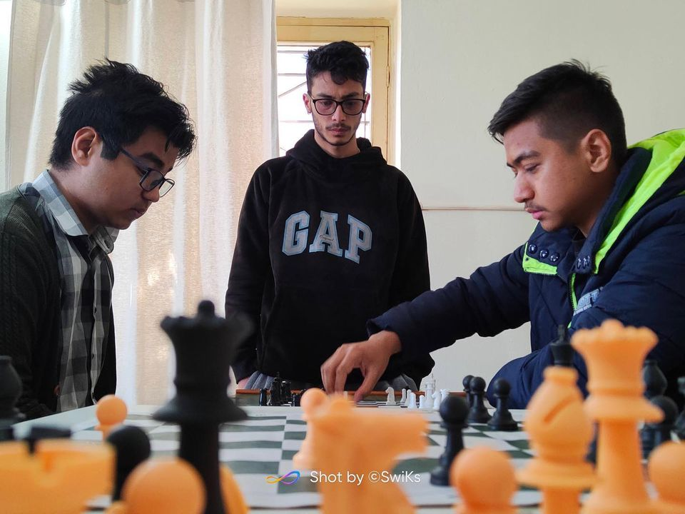
Checkmate! Congratulations to Shreeyash Kayastha for his impressive victory and Aayush Shrestha for attaining the runner up position at the Chess Tournament of CM sports 2023. A big thanks to the organizers,volunteers and all the participants actively involved in the competition. Read More...
March 11, 2023The very first, CM SPORTS TOURNAMENT 2023
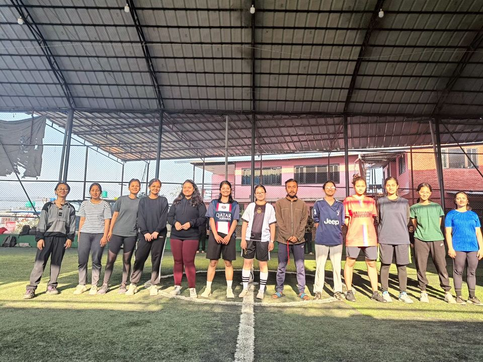
The very first, CM SPORTS TOURNAMENT 2023 Read More...
March 09, 2023CM SPORTS TOURNAMENT 2023
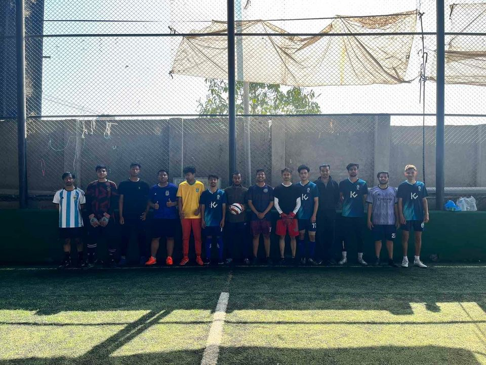
CM SPORTS TOURNAMENT 2023 Read More...
March 09, 2023Workshop on Python Fundamentals was a successful program organized by Kathmandu University Computational Mathematics club where students shared their experience and knowledge of python with faculties and researchers.
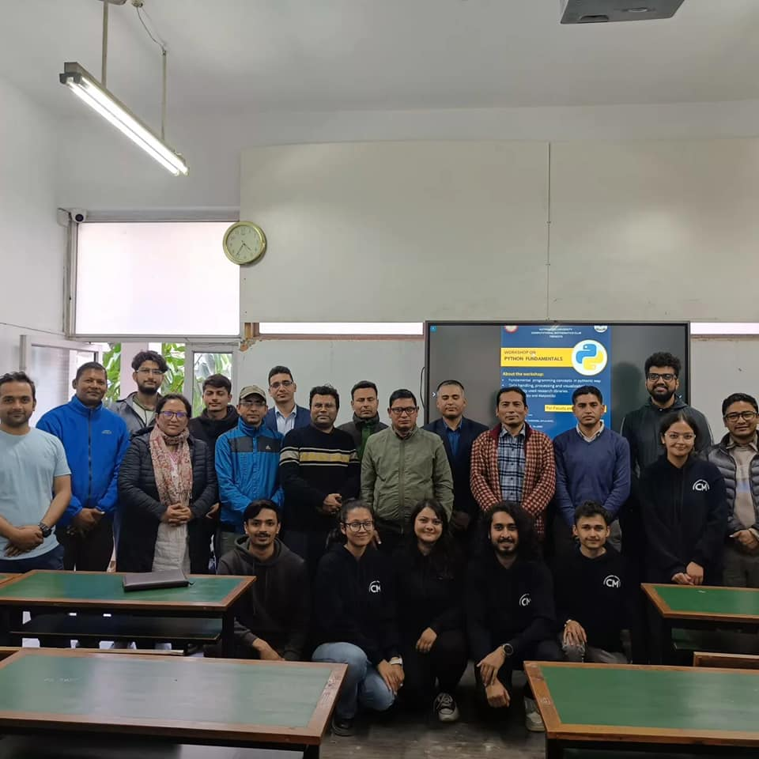
Workshop on Python Fundamentals was a successful program organized by Kathmandu University Computational Mathematics club where students shared their experience and knowledge of python with faculties and researchers. Congratulations to every participant and a big thank you to our instructors. It was a privilege sharing what little we knew about python. The certificate distribution was graced by the presence of our HOD assoc. Prof. Dr Rabindra Kayastha and our club coordinator… See more Read More...
March 08, 2023Projects and team work is an essential part of learning.So to culminate the efforts of theoretical classes , we had a project day where participants tried and experimented with implementing Euler's method in python.
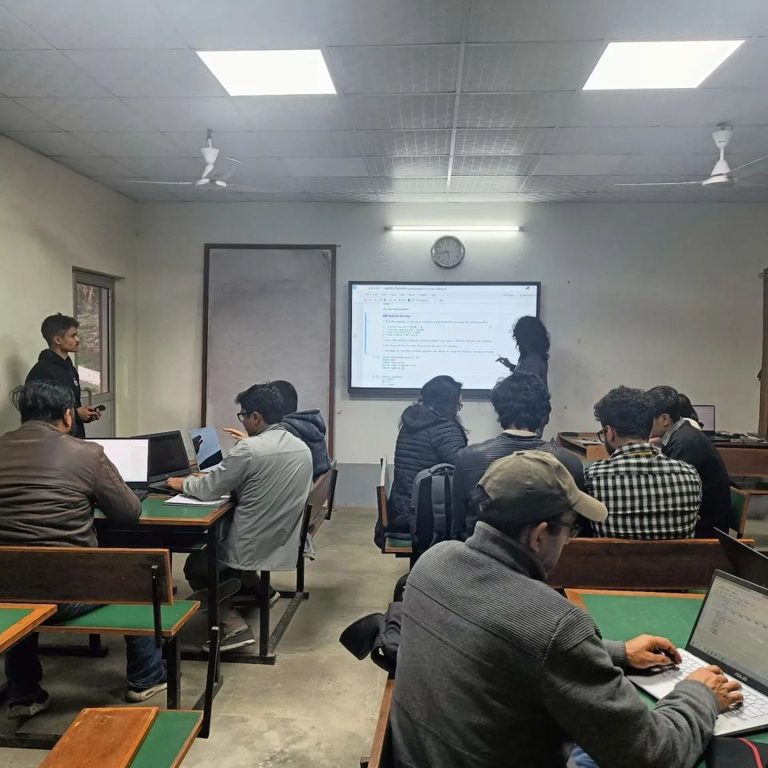
Projects and team work is an essential part of learning.So to culminate the efforts of theoretical classes , we had a project day where participants tried and experimented with implementing Euler's method in python. Read More...
March 08, 2023At KUCMC, we believe in equipping learners with the skills they need to thrive in today's digital world.

At KUCMC, we believe in equipping learners with the skills they need to thrive in today's digital world. Our Python fundamentals workshop is just one example of that commitment Read More...
March 03, 2023Congratulations to team from Computational Mathematics consisting of Ayam Basyal , Priyanka Panta and Mukesh Tiwari for being selected for the second phase of "STEM Material Design Competition among University Students" by the Ministry of Education, Science and Technology (MoEST).
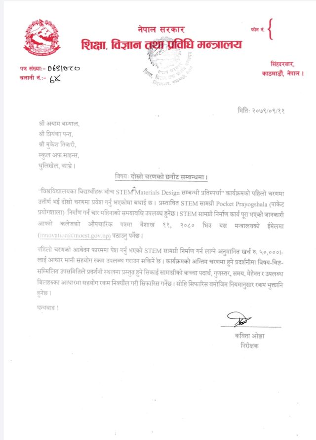
Congratulations to team from Computational Mathematics consisting of Ayam Basyal , Priyanka Panta and Mukesh Tiwari for being selected for the second phase of "STEM Material Design Competition among University Students" by the Ministry of Education, Science and Technology (MoEST). We wish them all the best for the upcoming competition. Read More...
December 26, 2022Orientation session for CM students of batch 22, organized by Kathmandu University Computational Mathematics Club(KUCMC) and the Department of Mathematics.

Orientation session for CM students of batch 22, organized by Kathmandu University Computational Mathematics Club(KUCMC) and the Department of Mathematics. Welcome to CM batch-22 in the very first days of their university life. With tips and tricks to have a whale of a time as a student at Kathmandu university and an integral part of KUCMC. Guidance by the teachers about academics to touring KU premises along with loud bonding sessions, the event was a huge success. To the ba… See more Read More...
December 04, 2022Few representatives from KUCMC attended the orientation of new batch 2022 organised by KUSOS .
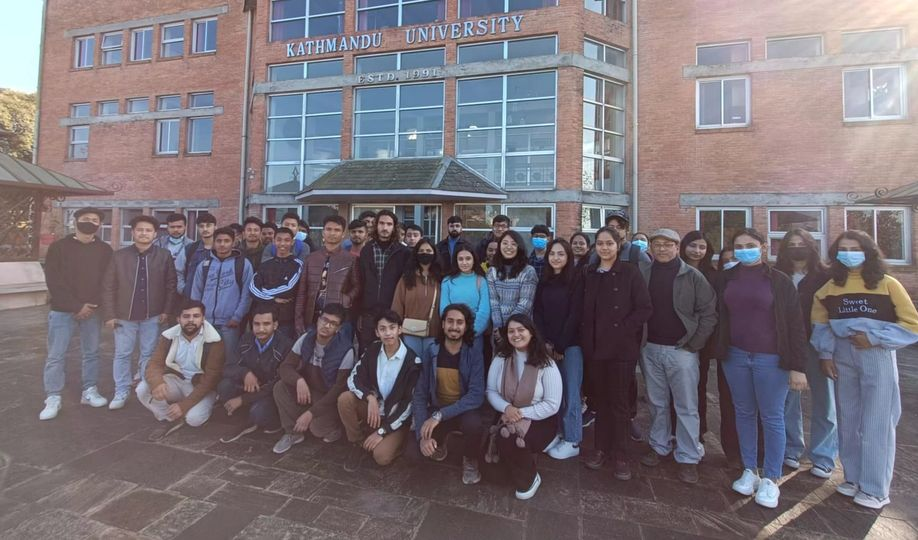
Few representatives from KUCMC attended the orientation of new batch 2022 organised by KUSOS . Read More...
December 02, 2022Succcessfully conducted today's event on "Mathematics on Election and Politics".

Succcessfully conducted today's event on "Mathematics on Election and Politics". Read More...
November 16, 2022Mathematics in Elections And Politics
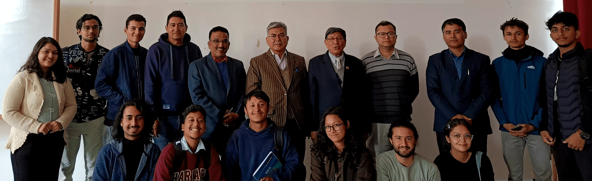
'Mathematical Talk for Non-Mathemticians.' 'Former registrar Dr. Bhadraman Tuladhar gave a talk on 'Mathematics in Elections And Politics'.' Read More...
October 10, 2022Handover Ceremony

'Handover to the new committee of KUCMC 2022-23' 'Let's welcome our new team bubbling with energy and enthusiasm for the year of 2022-23.' Read More...
October 09, 2022Congratulations to the team Nepalensis for their excellent performance in the very first bio hackathon in Nepal.
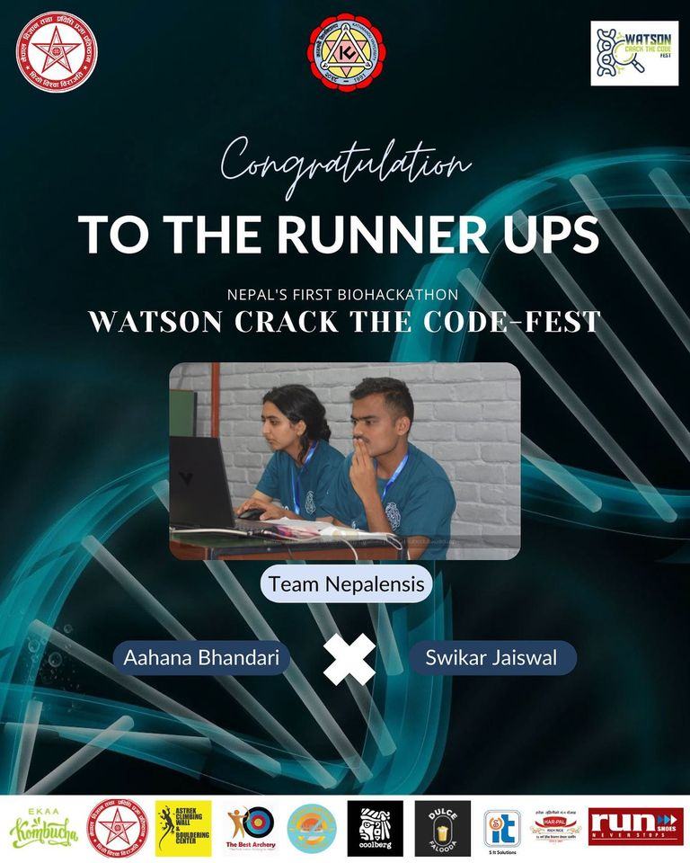
Congratulations to the team Nepalensis for their excellent performance in the very first bio hackathon in Nepal. The team consisting of Swikar Jaiswal, a first year student from Computational Mathematics made a interactive website in the short time frame to display species discovered in Nepal and managed to secure runner up position. Read More...
September 16, 2022We couldn't have hoped for more enthusiastic crowd and talented trainers.

We couldn't have hoped for more enthusiastic crowd and talented trainers. The workshop on 'Version Control using Git and GitHub' conducted on September 8 was a huge success. The computational mathematics club would like to thank Mr. Ayush Aryal and Mr. Shubhechchhak Pokhrel from Computer Engineering of Kathmandu University for hosting an interactive session on project management and contributing to open source projects. We are grateful to all who attended the session. Read More...
September 13, 2022Version Control using Git and GitHub
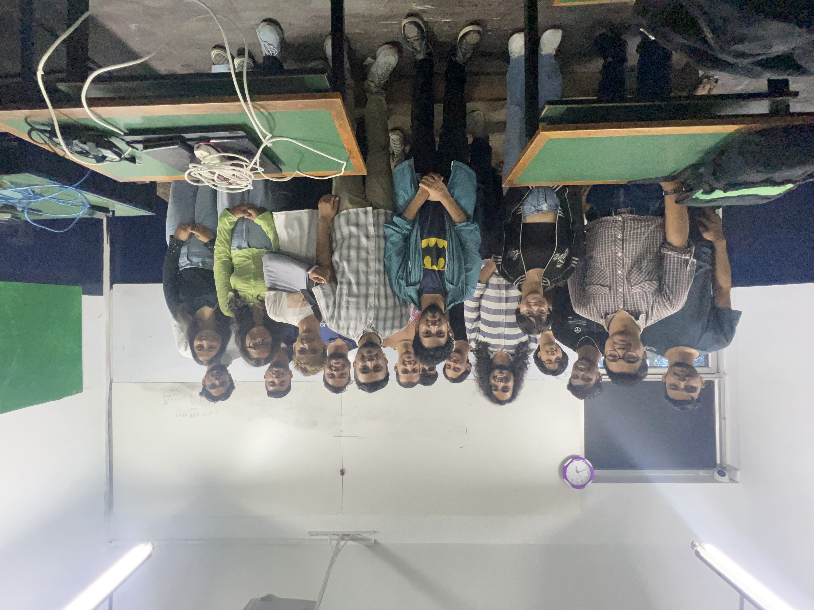
The workshop on 'Version Control using Git and GitHub' dated September 8,022 was mentored by Mr. Ayush Aryal and Mr. Shubhechchhak Pokhrel from Computer Engineering of Kathmandu University Read More...
September 08, 2022We have successfully organised the workshop on "Deep Learning with supercomputer".
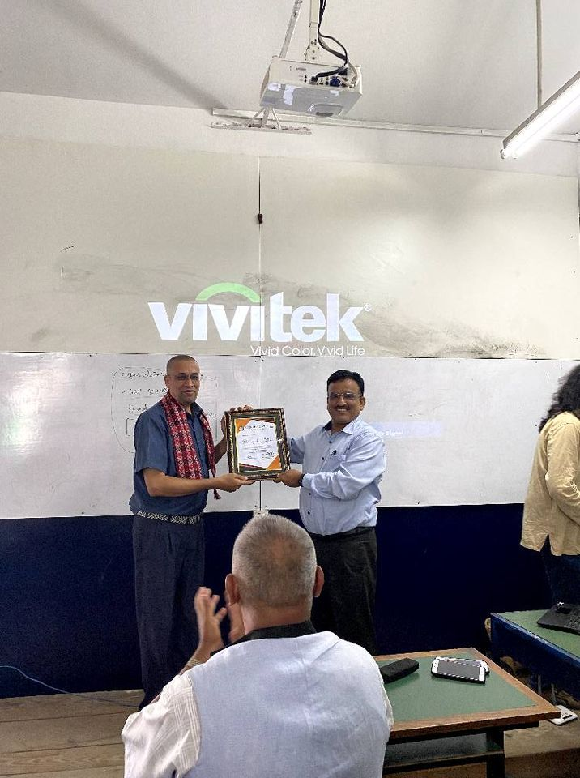
We have successfully organised the workshop on "Deep Learning with supercomputer". Read More...
August 21, 2022Some glimpses from KU Alumni Meet 2022 held at Kathmandu University School of Management(KUSOM) on Saturday.
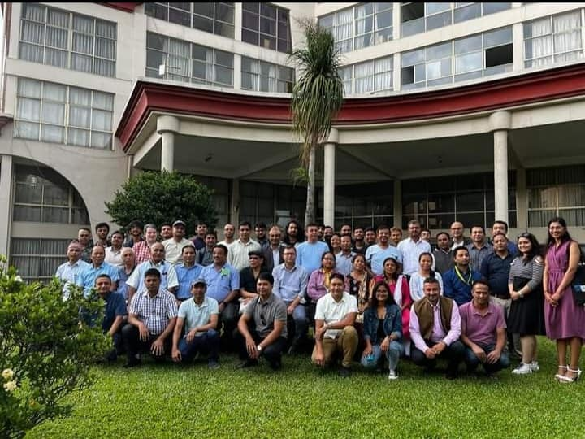
Some glimpses from KU Alumni Meet 2022 held at Kathmandu University School of Management(KUSOM) on Saturday. Read More...
August 21, 2022KU Alumni Meet 2022

KU Alumni Meet 2022 was held at Kathmandu University School of Management(KUSOM) on August 21,022 Saturday. Read More...
August 21, 2022Successfully completed the installation session of 'Workshop on Deep Learning on Super Computer' with 45 plus participants.

Successfully completed the installation session of 'Workshop on Deep Learning on Super Computer' with 45 plus participants. We are indebted to Dr. Rajendra Adhikari sir for his invaluable time and treasure trove of experience. Read More...
August 20, 2022Kathmandu University Computational Mathematics Club with the help of Department of Mathematics successfully conducted Interaction Program with the President of Association of Nepali Mathematician In America (ANMA) Dr. Kedar Nepal.
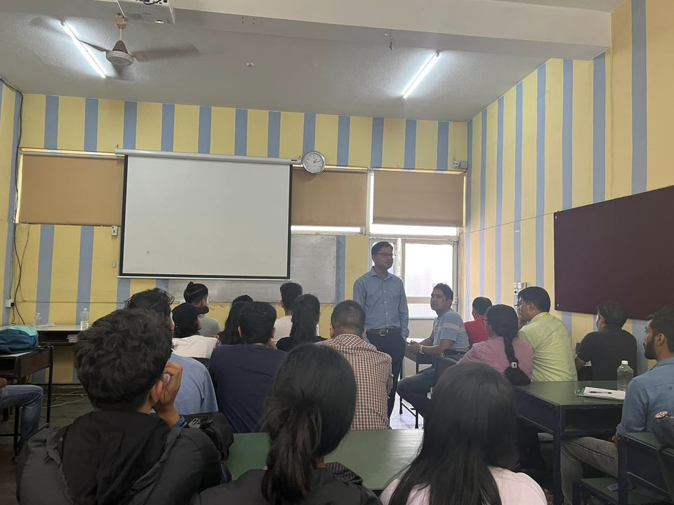
Kathmandu University Computational Mathematics Club with the help of Department of Mathematics successfully conducted Interaction Program with the President of Association of Nepali Mathematician In America (ANMA) Dr. Kedar Nepal. Read More...
July 19, 2022Admission Open in Computational Mathematics at School of Science, Kathmandu University.
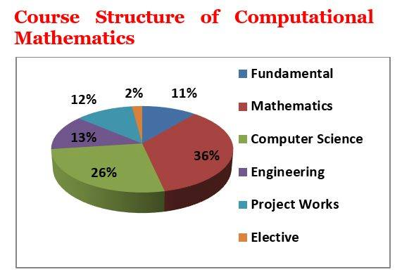
Admission Open in Computational Mathematics at School of Science, Kathmandu University. KU had launched B.Sc. in Mathematics with specialization in Computer in 1999 and as a continuation of this program; KU has started B.Sc. in Computational Mathematics since 2017 with updated structure for the first time in South Asia. It is a degree which prepares a student for either direct employment in industries after graduation, as well as pursuing higher studies in Mathematics or in IT sectors. Read More...
July 11, 2019